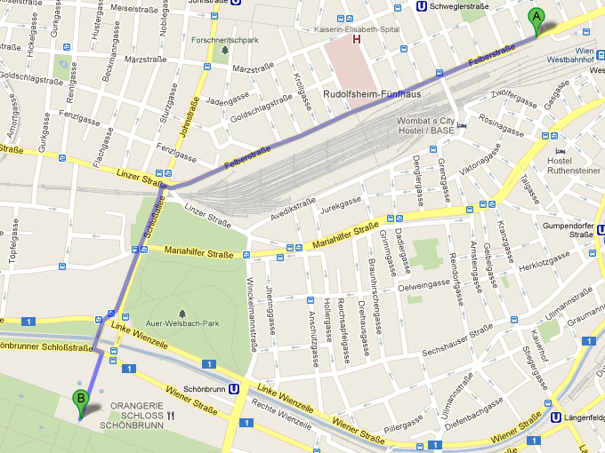
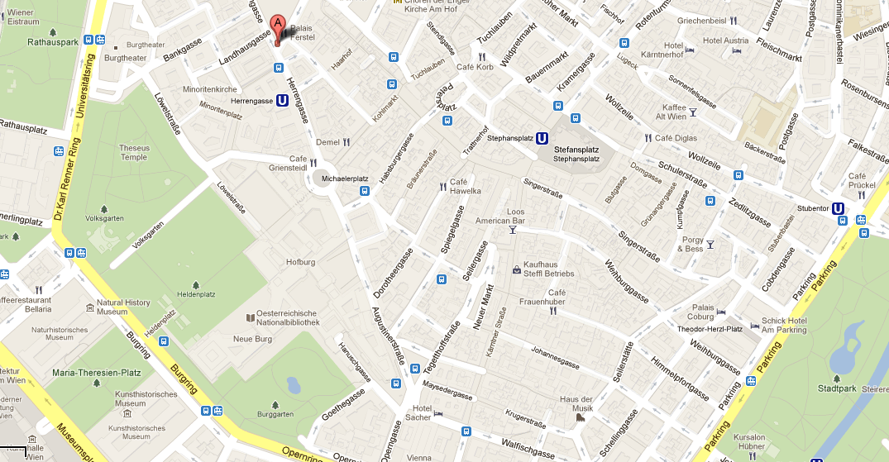
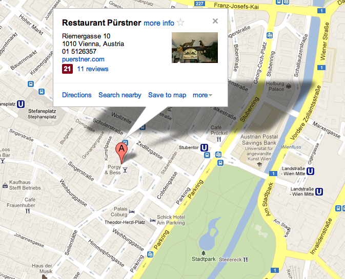

Vienna, VIB,U3 Stat.Erdberg
Erdberg --Metro U3-- Westbahnhof
Westbahnhof an Wien, Felberstraße 20
Do Step Inn @ Felberstrasse 20, Vienna, 1150, Austria
Beingasse Straßenbahn Dr.-Karl-Renner-Ring Dr.-Karl-Renner- Dr.-Karl-Renner-Ring Straßenbahn D
Kärntner Ring/Oper Südbahnhof S
Upper Belvedere
Prinz Eugen-Straße 27, 1030 Wien
Plane Wien Schwechat: Bus, to stop “Südbahnhof “
Train to stop “Südbahnhof “
Tram D, to stop “Schloss Belvedere”
Tram 18, 0, to stop “Südbahnhof”
Bus 13A, 69A, to stop “Südbahnhof”
Underground U1, to stop “Südtirolerplatz”

You can reach the Musikverein with the following means of public transport:
Underground: U1, U2, U4 station Karlsplatz / Oper
Tram: 1, 2, D, 62 station Kärntner Ring / Oper
71 last stop Schwarzenbergplatz
Bus: 59A, 2A station Kärntner Ring / Oper 4A station Karlsplatz
Wiener Lokalbahnen (Badner Bahn) last stop Kärntner Ring / Oper
金色大厅不一样，卖票和入场是两个口。如果已经订了票，记得不要走到卖票的那个口去傻等。到金色大厅后，先去柜台凭打印的付款凭证换票，然后马上入场。
Karlskirche

沿着铁路线步行到美泉宫。
25分钟后，往左拐过一铁路宽大的桥墩子，眼前一片开阔，硕大的草坪，成片的树林，朝霞辉映下的宫殿已经远远地呈现在眼前了。
Schönbrunn Palace, Schloß Schönbrunn, 1130 Vienna, Austria
U4: Sch鰊brunn U4, Tram 10, 58, 60: Hietzing
Grand Tour with audio guide: 11,50 Euro ; with guide:14 Euro
tel. 811 13
April - June, Sept., Oct.: daily 8:30 a.m.-5 p.m.
July, Aug.: daily 8:30 a.m.-6 p.m.
Nov. - March: daily 8:30 a.m.-4:30 p.m.

U3 Stubentormore
Plachutta Wollzeile
Wollzeile 38
1010 Vienna, Austria
Tel: 01/512 15 77

蓝线
(2)完毕后，搭乘U4到Stadtpark站，参观城市公园。公园内有各大音乐家的雕像，最著名的是维也纳重要地标“金色施特劳斯像”。
(3)完毕后，搭乘有轨电车1路或D路，到Oper站，瞻仰一下国家歌剧院（Oper）。
4)接下来，步行参观环线上的重要景点，大致路线为：Opering、Burgring、Dr-Karl-Renner-Ring、Dr-Karl-Lueger-Ring。一路会途经：
Burggarten
U2地铁站 ”Schottentor - Universitaet”
里面感觉真的很有历史的气息，尤其是1楼的走廊里，很多著名科学家的头像，让人肃然起敬。在主楼里转完后，往前走走，就到了市政厅（Rathaus）
世界上现存最大，最古老的德语大学。许多著名科学家曾经在这里工作和研究，如薛定鄂，佛洛伊德，多普勒，卡尔波普等（大学里有一个专门的长廊陈列着他们的塑像）
可以的，周1-6，免费参观。不过，里面很大，不熟，没标识，出名的大礼堂、地下室，庭院的喷泉，以及其他地方介绍图片上的排列很有特色的楼梯没找到。
维也纳大学和沃帝夫教堂仅一条马路相隔，再往北，经过弗洛伊德博物馆，大概将近1公里距离，就能见到一座美丽的教堂。 虽然这座美丽的教堂有些偏僻，但很值得一看，它是早期巴洛克风格，于1651年修建。教堂里面有用拉毛粉饰法制做得装饰盒壁画。主祭坛右边的那个13世纪的十字架原先立在Schlickplatz的公共刑场上，被称为绞刑十字架。 该教堂也是免费参观的。每天早9点-晚22点。

Café Central, Herrengasse, Vienna, Austria

一家有点摇滚乡村风格的餐厅，服务生很幽默风趣给你主动打招呼。一尺长的猪肋排更是人见人爱的美食。如果胃口小一点的女生两个人要一份就够了（好像是13欧左右），还送一小碗菜丝沙拉和烤土豆。俺们在艺术史博物馆暴走5个小时之后来这里看到香喷喷的猪肋排，刚上桌就已经内牛满面了！！！
地址：Riemergasse 10, Vienna 1010。比较近的地铁站是U3的Stubentor和Stephansplatz站。
票价: 12欧
To reach the museum from the Westbahnhof
Take subway train U3 to the Volkstheater station.
To reach the museum from the Südbahnhof
Take street car D to the Burgring/Kunsthistorisches Museum stop.
Public transportation
U2, U3, D, 1, 2, 2A, 57A
Information about closing days
Tel. +43 1 525 24- 4025
Maria-Theresien-Platz, 1010 Wien
Opening hours
Tuesday - Sunday
10 a.m. to 6 p.m.
Thursday 10 a.m. to 9 p.m.
(Coin cabinet closes at 6 p.m.)
U2: MuseumsQuartier；U3: Volkstheater ；tram D, J, 1, 2, bus 2A, 57A: Burgring
布鲁克公园
美术史博物馆和自然史博物馆
市立公园(小斯特劳斯像，舒伯特像，贝多芬像)
1., Stephansplatz
U1, U3: Stephansplatz
tel. 515 52 - 3526
Café Central, Herrengasse, Vienna, Austria
Imperial Palace – Hofburg 霍夫堡皇宫
推荐度：☆☆☆☆☆
U1, U3: Stephansplatz, U3: Herrengasse, U2, U3: Volkstheater, Bus 48A: Dr.- Karl-Renner-Ring, Tram D, J, 1, 2, Bus 57A: Burgring
Price: 8,90 euro ;Guided tours: 11,40 Euro (下纳多个景点，套票包含：Imperial Apartments; Imperial Silver Collection; Secular and Ecclesiastical Treasuries等)
www.hofburg-wien.at
交通：坐U1到Donauinsel站下
奥地利国会大厦以它最著名的特色——雅典娜雕像和喷泉，成为维也纳知名的旅游景点。
maps
www.leopoldmuseum.org
https://maps.google.com/maps?saddr=Eurolines+Austria,+Erdbergstra%C3%9Fe+200A,+1030+Vienna,+Austria&daddr=Felberstrasse+20,+Vienna,+1150,+Austria+to:Belvedere+Palace,+Prinz-Eugen-Stra%C3%9Fe,+Vienna,+Austria+to:Secession+to:St.+Charles's+Church,+Kreuzherrengasse,+Vienna,+Austria+to:Wiener+Philharmoniker,+B%C3%B6sendorferstra%C3%9Fe+12+1010+Wien,+%C3%96sterreich+to:Caf%C3%A9+Central,+Herrengasse,+Vienna,+Austria+to:Restaurant+P%C3%BCrstner,+Riemergasse,+Wien,+%C3%96sterreich+to:Nationalbibilothek+to:Caf%C3%A9+Sacher,+Philharmonikerstra%C3%9Fe,+Vienna,+Austria+to:Hofburg+Palace,+Vienna,+Austria+to:Kunsthistorisches+Museum+to:Stephansplatz,+Wien,+%C3%96sterreich+to:Hofburg+to:Opering+to:Wiener+Rathaus,+Rathausplatz,+Vienna,+Austria&hl=en&ie=UTF8&sll=48.20329,16.374245&sspn=0.052858,0.153809&geocode=FaFV3wIdR3X6ACG4Du5nqJxUIClpV1vwUAdtRzG4Du5nqJxUIA%3BFWRu3wIdhT35ACnJ0Rho9gdtRzGGru9B0iUSwA%3BFaxW3wIdyO_5ACG1HCRoNJ1cgCnR_0ECfQdtRzG1HCRoNJ1cgA%3BFeh03wIdscj5ACESWKnSoDOZHin93u8_ZQdtRzESWKnSoDOZHg%3BFSBy3wIdytD5ACEy9WbcvKWrzinHahaCggdtRzEy9WbcvKWrzg%3BFS183wIdiNT5ACHWdTqzxJQjMSnHNrtFnQdtRzHWdTqzxJQjMQ%3BFYGh3wIdYbf5ACFJLkL7P4f6WykvOwz3lwdtRzFJLkL7P4f6Ww%3BFYiU3wIdouL5ACFHIgC81hcnBCnj0DIzngdtRzFHIgC81hcnBA%3BFS6R3wIdmrz5ACFHb7QGxvndVyn1IydjmQdtRzFHb7QGxvndVw%3BFYqI3wIdscf5ACGlhtv1jMoNyCkjznBunAdtRzGlhtv1jMoNyA%3BFYWV3wIdo7T5ACHjrKpjwfWaDynfBiC_mQdtRzHjrKpjwfWaDw%3BFY-I3wIdLqj5ACGFp662b1GUqinxd89jmgdtRzGFp662b1GUqg%3BFQKZ3wIdTtT5ACmh_IE-nwdtRzHeH6pWwWMFAg%3BFYWV3wIdo7T5ACHjrKpjwfWaDynfBiC_mQdtRzHjrKpjwfWaDw%3BFQGE3wIdErz5ACF6Fr4sh_64Nind9ultmwdtRzF6Fr4sh_64Ng%3BFVqj3wIdXpv5ACF4obL54tHNpynzitvelQdtRzF4obL54tHNpw&oq=Rathaus&mra=ls&t=m&z=15
维也纳的博物馆和主要景点
东欧慢摇 - 萨尔茨堡Hallstatt维也纳完整版(交通住宿景点行程)